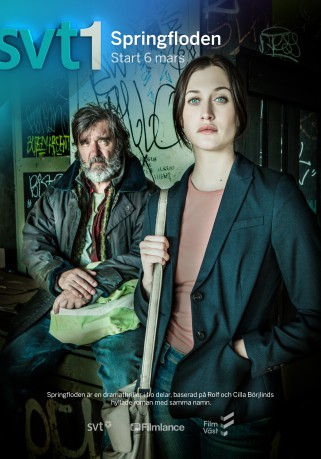

 
 IMDB-Wertung: 7.5 / 10
IMDB-Wertung: 7.5 / 10  Metascore: 0
Metascore: 0 
Im Jahr 1990 wurde bei Vollmond auf der schwedischen Insel Nordkoster eine hochschwangere Frau am Sandstrand eingegraben, die bei steigender Flut ertrank. Auch nach 25 Jahren ist dieser Fall noch immer nicht gelöst. Olivia Rönning besucht die Polizeihochschule und beschäftigt sich mit diesen Fall als Semester-Aufgabe. Als sie feststellt, dass ihr verstorbener Vater an der ursprünglichen Untersuchung beteiligt war, wächst ihr Interesse daran, den Fall endlich zu lösen...
Jahr: 2016
Dauer: 81 Minuten
FSK:
Land: Schweden Studio: Endemol Shine InternationalTonspuren:
Untertitel:
Auflösung: 720p (1280x720) Größe: 1894 MB
Genre: Thriller, Drama, Krimi, Mystery, TV-Serie
Regisseur: Niklas Ohlson, Mattias Ohlsson, Pontus Klänge
Drehbuch: Sveriges Television (SVT)
Soundtrack:
Darsteller:
- Julia Ragnarsson als Olivia Rönning 10 episodes, 2016
- Johan Widerberg als Minken 7 episodes, 2016
- Helena Bergström als Linn Magnusson 7 episodes, 2016
- Dakota Trancher Williams als Adam 7 episodes, 2016
- Görel Crona als Jackie Berglund 6 episodes, 2016
- Michaela Thorsén als Lisa 6 episodes, 2016
- Arvin Kananian als Bosse 6 episodes, 2016
 Dar Salim als Abbas 5 episodes, 2016
Dar Salim als Abbas 5 episodes, 2016- Michael Segerström als Mårten Olsäter 4 episodes, 2016
- Richard Sseruwagi als Mikael Florén 3 episodes, 2016
- Filip Berg als Ove Gardman 3 episodes, 2016
- Niklas Jarneheim als Arne Rönning 3 episodes, 2016
 Robert Follin als Sedovic 2 episodes, 2016
Robert Follin als Sedovic 2 episodes, 2016- Jonatan Blode als Stein 1 episode, 2016
- Per Ragnar als Carl Videung 1 episode, 2016
- Rasmus Luthander als Ulf 1 episode, 2016
 Kjell Bergqvist als Tom Stilton 10 episodes, 2016
Kjell Bergqvist als Tom Stilton 10 episodes, 2016- Cecilia Nilsson als Mette Olsäter 7 episodes, 2016
- Peter Carlberg als Alexander Nordin 7 episodes, 2016
- Dag Malmberg als Nils Wendt 7 episodes, 2016
- Stefan Gödicke als Klinga 7 episodes, 2016
- Kjell Wilhelmsen als Forss 7 episodes, 2016
- Gustav Lindh als Liam 7 episodes, 2016
- Niklas Hjulström als Bertil 6 episodes, 2016
- Anna Wallander als Vera 6 episodes, 2016
- Iggy Malmborg als Lennie 6 episodes, 2016
- Leonard Samuelsson Heinemann als Acke 6 episodes, 2016
- Mattias Silvell als Arvo Pärt 5 episodes, 2016
- Josefin Iziamo als Muriel 5 episodes, 2016
- Angela Kovacs als Eva Carlsén 5 episodes, 2016
- Björn Andrésen als Benseman 5 episodes, 2016
- Malena Engström als Ovette 5 episodes, 2016
- Jessica Zandén als Maria Rönning 5 episodes, 2016
- Lars Andersson als Erik 4 episodes, 2016
- Carina M. Johansson als Marianne Boglund 4 episodes, 2016
- Dominik Henzel als Chivas 4 episodes, 2016
- Paloma Winneth als Adelita 4 episodes, 2016
- Mia Eriksson Olsson als Sekreteraren 3 episodes, 2016
- Gustave Lund als Bo Fast 2 episodes, 2016
- Josephine Bauer als Miriam Wixell 2 episodes, 2016
- Patricio Arenas als Bosques 2 episodes, 2016
- Lisbeth Johansson als Betty Nordeman 2 episodes, 2016
- Vincent Wettergren als Ung Ove Gardman 2 episodes, 2016
- Ulf Stenberg als Jonte 2 episodes, 2016
- Edith Ciobanu Stein als Ung Olivia 2 episodes, 2016
- Alexander Morgan als Knivsliparen Jamez 2 episodes, 2016
- Richard Turpin als Ronnie Redlös 2 episodes, 2016
- Rocio Carrenza als Bartender 2 episodes, 2016
- Claes Elfsberg als Nyhetsankare 2 episodes, 2016
- Sasha Becker als Ung Eva Carlsén 1 episode, 2016
Datei: X:\HD-Serien\Springflut\Springflut - S01E01E02.mkv seit 14.11.2017
Festplatte: HD Serien(I-ST)
 Es gibt insgesamt 182 Filme in der Gruppe 'HD-Serien'
Es gibt insgesamt 182 Filme in der Gruppe 'HD-Serien'
")